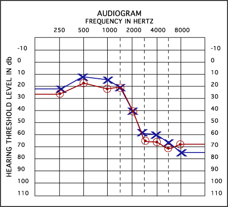

Data
The data we will collect for figuring out the need of this invention is the results of audiograms performed by audiologists that have patients from different groups of people. This will try to cover groups of people from everything from construction workers to office clerks. This is an example of an audiogram that detects the hearing from a range of hertz, and how much decibel it is required for the test subject to hear it.
